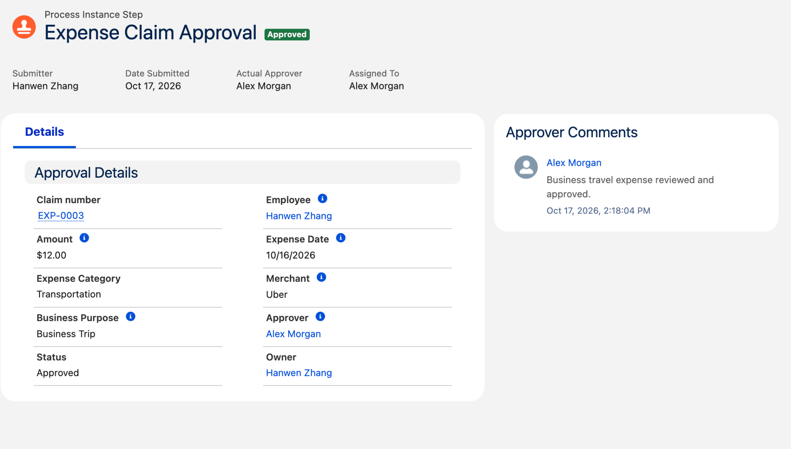
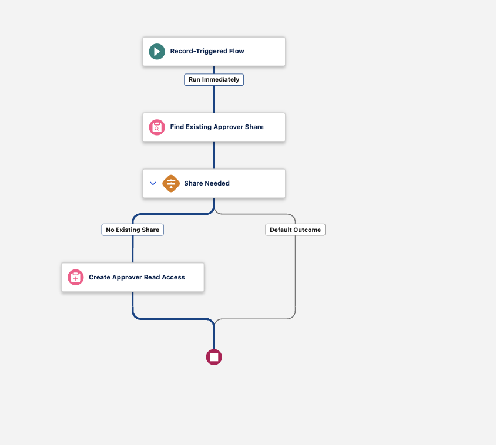
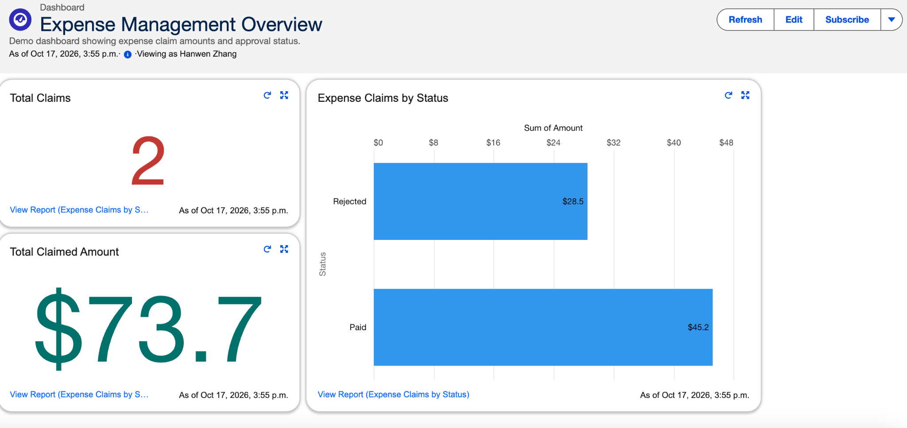

It started with a receipt. Naturally.
One day, I noticed how reimbursement worked at my brother’s company: take a receipt, find accounting, and ask to get paid back. My inner accounting student had a small question: could we give that receipt a slightly more organized life?
The receipt could tell me what someone bought. Business purpose? Reviewer? Already reimbursed? The receipt was keeping those details to itself. I thought the repeated handoffs looked time-consuming, and wondered whether I could bring the missing context together in Salesforce.
That was my excuse to build a Salesforce prototype. The plan: let the system organize the handoffs, and let a human decide whether that dinner was actually a business expense. A modest ambition. At least, that is how it started.
The inspiration came from observing a manual reimbursement practice. This is an independent learning project, not a commissioned implementation for my brother’s company. I did not conduct a formal time study or deploy it in that company. The records, receipts, and reviewer persona shown here are demonstration data.
First, what does “done” actually mean?
My first idea was wonderfully simple: put reimbursement online. Then came the less glamorous question: online… and then what? A prettier form would still leave someone figuring out the next step. So I started with the process.
I settled on five statuses: Draft, Submitted, Approved, Rejected, and Paid. The distinction that mattered most to me was between Approved and Paid. A manager agreeing that an expense is legitimate is different from accounting recording that the employee has received payment.
A claim lifecycle with a separate approval decision and payment status, rather than a single “done” field.
A receipt walks into a database…
I created a custom Expense Claim object and an Expense Management Lightning app. Each claim stores the amount, expense date, category, merchant, and business purpose. Employee and Approver fields connect the claim to Salesforce users.
I used an automatic claim number so each request could be referenced consistently. I also added Files for supporting receipts and a separate Payment Date field. This gave the request a home where the expense details and evidence could be reviewed together.
For the demonstration, I attached a clearly marked sample receipt. I wanted to show the document-handling step without presenting a fabricated receipt as a real transaction.
A structured claim record with supporting files, user relationships, and a payment date.
A polite little “no” can be a useful feature
Once the fields existed, I considered mistakes that could make the records unreliable. A claim with a zero or negative amount would not make sense in this version. A future expense date should also be flagged. I added validation rules for those cases.
I then considered responsibility: the employee should not be their own approver, and a claim leaving Draft should have both people identified. Finally, I added payment controls so a claim could only move to Paid from Approved and would require a payment date.
One useful check was attempting to move a rejected claim to Paid. The validation blocked the change. That made the distinction between approval and payment something the system could enforce, rather than just a label on the page.
Rules for expense data, separation of employee and reviewer, and the transition into Paid.
Let Salesforce do the chasing
I configured an approval process to route a draft claim to the user selected in its Approver field. On submission, the process changes the status to Submitted and locks the pending record. The reviewer can approve or reject it and leave a comment.
I tested both outcomes. One demonstration claim represented a personal dinner unrelated to business and was rejected. Another represented a business trip and was approved. These examples helped me show that the workflow needed to handle disagreement, not only the successful path.
A working submission and review process, with approved and rejected examples and saved decision comments.
The $12 business trip gets its moment
Demo claim EXP-0003 moved from Draft to Submitted to Approved. The review retained the designated approver and their decision comment. Select either screenshot to inspect it at full size.

Apparently, access is its own project
Getting the approval button to work was only part of the problem. I also needed to think about access. I changed expense records to Private and configured a reviewer permission set with read access. Object permission and access to a particular record were separate things to check.
I also wanted the history to explain changes. I enabled field history and checked an amount change from $10 to $12. Alongside approval comments, this made the demonstration easier to review: I could show both what the record contained and how it had changed.
Data and payment validation
- Amount must be positive; expense date cannot be in the future.
- Employee and approver must be different users.
- Non-draft claims require an employee and approver.
- Moving to Paid requires prior Approved status and a payment date.
Access and traceability
- Private organization-wide access for expense records.
- Reviewer permission set with object and field read access.
- Approval history preserves decisions and comments.
- Field history records tracked changes, including amount changes.
The part that needed more careful verification: sharing
I built a Flow to check whether an approver already had a share record and create read access only when needed. During setup, I learned to distinguish the Approver lookup’s stored user ID from the related user record. Debugging showed the actual values being passed into the share record.
The debug run was useful, but it had an important limit: I skipped the start conditions and ran it in rollback mode. That tested the path without proving that submitting a claim would trigger it automatically. I therefore keep that distinction explicit in this case study.
Configured an after-save flow to look for an existing approver share and create read access when none exists. A rollback debug run reached the create step and completed without an error. Record access and approval were demonstrated separately; automatic triggering by the approval process has not been independently established from the available evidence.

Time to make the numbers agree
After the individual records worked, I wanted to check the overall picture. I built a report grouped by status and a dashboard showing claim count, total claimed amount, and amounts by status. I then reconciled the dashboard against the three demonstration claims. These figures describe the sample dataset, not business impact.

The dashboard had a small plot twist
I built a dashboard so the summary would be easier to read at a glance. But take a look at these two screenshots: the report has three claims, while the dashboard below still shows two. The dashboard’s displayed “as of” time is earlier. A useful reminder that a neat chart can still be an old chart.

I subsequently checked the final dashboard totals against the three claims below. For the next version, I want the data’s freshness to be as obvious as the numbers themselves.
| Claim | Final status | Amount | Scenario |
|---|---|---|---|
| EXP-0001 | Paid | $45.20 | Approved claim with payment date |
| EXP-0002 | Rejected | $28.50 | Personal expense rejected with comment |
| EXP-0003 | Approved | $12.00 | Business travel approved by designated reviewer |
| Total | 3 claims | $85.70 | Total claimed amount includes rejected expenses |
Also checked: amount change history, reviewer read access, and an attempted Rejected-to-Paid update blocked by validation.
Three claims are a functional demonstration, not comprehensive testing. Sharing revocation after approver changes, ownership changes, broader status-transition restrictions, and production-scale testing remain outside this version.
What this demonstrates
I came for a less awkward receipt handoff. I stayed for data models, permissions, and a surprisingly satisfying $85.70 reconciliation.
The most useful part was turning a broad idea—“make reimbursement more automatic”—into specific questions. What information is required? Who makes the decision? When is a claim actually paid? What evidence shows that a control worked?
I also learned that a successful debug run and a successful real-world trigger are different pieces of evidence. For this first version, I can demonstrate claim capture, approval and rejection, payment validation, history, and reconciled reporting. I cannot yet claim time savings or production readiness.
This first version gets a claim through a review. My next question is bigger: can it help someone understand where reimbursement money is going—and where a request is getting stuck?
Version two: fewer blind spots, better questions
The system has a first chapter. It definitely does not have a “finished forever” sticker.
Here is what I would improve next. These are planned changes, not features I have already built.
And did it actually save time?
That is the question I still owe a proper answer. I would first measure the original process: time spent submitting, chasing approval, checking receipts, and recording payment. Then I would run the same scenarios through the prototype and compare completion time, rework, and errors. Until then, reduced effort is the goal—not a percentage I can honestly claim.
The idea is to grow from “here is your claim” into “here is what is happening, why it matters, and what needs attention next.” Preferably with fewer people having to hunt down accounting.
Built in Salesforce Developer Edition with AI-assisted guidance. This article describes the design decisions and observed results of the learning project.
Explore my Excel operations-control project ↗